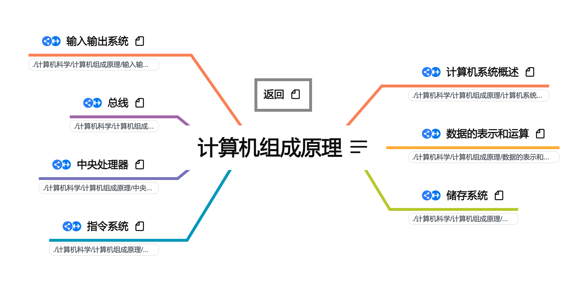

2022.09.04
[toc]

图例说明
加粗：章标题
斜体：题型/主要内容
计算机组成原理按照408考研辅导进行梳理。
链接: https://pan.baidu.com/s/1BXbCQE8VyXHVfnCqWeIFWw
提取码: qzdd
如果资源失效请联系我
1. 2023王道计算机组成原理.pdf（课本）
1. 2022计算机组成原理知识点
2. 2022计算机组成原理知识点课件
3. 2022计算机组成原理知识点习题讲解
4. 2022计算机组成原理知识点思维导图
5. 2022计算机组成原理强化直播
6. 2022计算机组成原理考研真题讲解
7. 2022王道计算机组成原理.pdf（课本）
8. 2022组成原理新增考点补充文档.pdf
9. 22版组成原理勘误.pdf
10. 408真题原题与解析
2022天勤计算机组成原理.pdf: 2022年408考研辅导教材
白中英-计算机组成原理
1. 计算机组成原理（第5版 立体化教材）.pdf
2. 2019年北邮计算机学院课程课件（参考教材为第五版）
3. 计算机组成原理-第6版.pdf (白中英、戴志涛).pdf
4. 计算机组成原理试题解析（第六版） (白中英, 戴志涛).pdf
5. 计算机组成原理资源库（PDF版）.rar(第六版配套资料)
网站链接：http://www.cs.utah.edu/~bojnordi/classes/3810/f20/
计算机组成原理 by 唐朔飞 (z-lib.org).pdf:考研计算机组成原理标准教材
Computer Organization and Design The HardwareSoftware Interface 5th Edition - With all appendices and advanced material by David A. Patterson, John L. Hennessy.pdf:国际著名教材《计算机组织与结构》
ISO.IEC 646标准 : ASCII标准
IEEE754标准
1. ASCII标准介绍网页备份: IEEE 754 - Standard binary floating point arithmetic.html
2. ieee754eng.zip: IEEE 754浮点数标准工具。This is software created by http://www.softelectro.ru/program_en.html. It's used to show examples about IEEE754.
犹他大学公开资料计算机组成原理，体系结构，体系结构进阶: https://www.cs.utah.edu/~bojnordi/classes/
四川农业大学公开资料: http://eol.sicau.edu.cn/Courses/Default?courseid=303117
包括完整的课件，练习，以及附加资料：个人纯手工打造CPU.pdf， CPU是怎么制造的.pdf
《计算机组成原理》是计算机科学与技术类各专业必修的一门重要学科基础课，也是信息学科各专业的学科大类基础课，是《微机接口技术》和《计算机系统结构》的前导课。该课程全面地介绍了计算机单机系统的组成原理及内部工作机制，包括计算机各大部件的结构、工作原理、逻辑实现、设计方法及其互连构成计算机整机的技术。课程的目的是通过学习和实践，帮助学生建立计算机系统的整机概念，使学生掌握计算机的工作原理,深刻理解程序在计算机硬件上被执行的过程，即计算机硬件系统各组成部件的工作原理、逻辑实现、设计思想以及它们联结成整机并协调运转的方法，为培养学生对计算机系统进行分析、设计、开发、使用的能力奠定基础。
先修课程：数字逻辑、汇编语言
V1 2021.08.11
按照《2022年计算机组成原理考研复习指导》与相关课程进行整理，完成全部知识框架搭建
V2 2021.11.05
按照《2022年计算机组成原理考研复习指导》与相关课程进行整理，进行习题归纳与知识整合
V3 2022.09.04
按照《2023年计算机组成原理考研复习指导》与相关课程进行整理，进行习题归纳与知识整合，完成文档式笔记全部内容